Jabber otwarty protokół komunikacji w czasie rzeczywistym oraz powiadamiania o obecności, oparty o technologię XML (ang. Extensible Markup Language), podstawa otwartego, zatwierdzonego jako standard internetowy przez IETF (ang. Internet Engineering Task Force), protokołu XMPP (ang. Extensible Messaging and Presence Protocol).
- Słowa wstępu
- Nie chcę mi się tego czytać! To jest trudne!
- Utknąłem, nie wiem co teraz zrobić!
- FAQ
- Dodatki
- Linki
- Linki propagandowe
- Autor i licencja tego dokumentu
Chcesz podlinkować tą stronę? Możesz wykorzystać jeden z bannerów - lista banerów. Masz swój ładniejszy banner, jeżeli chcesz możesz go mi podesłać.
Chcesz być zawsze na bieżąco - śledź JabberFAQ w serwisie Identi.ca!
Chcesz śledzić zmiany w treści - sprawdź repozytorium w serwisie GitHub.
Słowa wstępu
Instant messaging
Komunikacja błyskawiczna to wymiana zazwyczaj informacji tekstowych w czasie rzeczywistym za pomocą specjalnego programu zwanego komunikatorem internetowym.
Protokół
Protokół to zbiór zasad określający sposób porozumiewania się.
Z... Znamy się mało... Więc może ja
bym powiedział parę słów o sobie, najpierw. Urodziłem się... Urodziłem się
w Małkini w 1937 roku w lipcu. Znaczy w połowie lipca... właściwie w
drugiej połowie lipca właściwie... Yyyy... Dokładnie 17 lipca. Yyyy...
No... to tyle może o sobie - na początek... Czy są jakieś
pytania?
-- Rejs
Niniejszy dokument jest próbą zebrania wszystkich porozrzucanych po Internecie informacji przydatnych początkującym oraz każdemu kto chciałby dowiedzieć się podstawowych rzeczy na temat wszystkiego co określane jest mianem Jabbera i XMPP, nowego protokołu komunikacji błyskawicznej (ang. Instant Messaging). Na początek warto wspomnieć o rzeczy najważniejszej, która odróżnia Jabbera od innych sieci pozwalających na komunikację w czasie rzeczywistym oraz pokaże sens ewentualnej przesiadki.
Jak dokładnie możemy przeczytać na głównej stronie XMPP został on uznany jako oficjalny standard sieciowy. Ogólnie mówiąc nie jest to kolejny lokalny wymysł jednej osoby czy kolejnej firmy. Jest to nowy standard w sposobie komunikacji. O zaletach rozwiązania docenionego przez ekspertów, oraz jak prosto przesiąść się na XMPP/Jabber, można przeczytać poniżej.
Ostatnie nowości z świata XMPP/Jabber można śledzić na oficjalnym blogu gdzie co jakiś czas podsumowywane są najciekawsze wydarzenia. Nowy standard zdobywa coraz większą popularność i jest wybierany przez duże poważne koncerny oraz małe garażowe firmy. Google rozwija swoje produkty takie jak komunikator Google Talk oraz platformę komunikacyjną Google Wave. Nokia rozwija własną platformę opartą o Ovi Contacts, która dostępna będzie na wszystkich telefonach tej firmy. A prężnie rozwijana platforma mikroblogowa Identi.ca wykorzystuje go jako podstawowe narzędzie wymiany informacji.
Ile osób korzysta z Jabbera?
Porównując badania firmy Gemius z lipca 2009 zasięg komunikatorów na rynku polskim to 40% sieci Gadu-Gadu oraz 5% sieci XMPP/Jabber (licząc komunikatory Spik, Tlen, Google Talk, oraz wydzielone korzystające z sieci XMPP/Jabber Konnekt i AQQ). W uproszczeniu zakładając 8 milionów polskich użytkowników sieci Gadu-Gadu zasięg sieci XMPP/Jabber w Polsce można oszacować jako milion użytkowników.
Na świecie liczba użytkowników Jabbera szacowana jest na ponad dziesięć milionów użytkowników. Szacunki sięgają nawet 50 milionów użytkowników. Zdecentralizowana struktura sieci i mnogość rozwiązań opartych na tym protokole utrudnia podanie konkretnej liczby. Analizując dane na przestrzeni ostatnich lat widać wzrost zainteresowania i udział większy od najpopularniejszych kiedyś komunikatorów AIM, MSN czy Yahoo.
- 309 milionów użytkowników sieci Skype
- 221 milionów aktywnych użytkowników sieci QQ
- 53 miliony aktywnych użytkowników sieci AIM, 100 milionów wszystkich zarejestrowanych
- Między 40 a 50 milionów użytkowników sieci XMPP/Jabber
- 27 milionów aktywnych użytkowników sieci MSN, 155 milionów wszystkich zarejestrowanych
- 22 milionów aktywnych użytkowników sieci Yahoo
- około 6 milionów aktywnych użytkowników sieci GG
- 4 miliony aktywnych użytkowników sieci ICQ
Powyższe dane pochodzą z Wikipedii i są jedynie pewnym odniesieniem, a nie dokładnymi danymi. Dokładniejszych i aktualniejszych danych należy poszukać w Internecie. Powyższe dane pochodzą z października 2009.
Nie chcę mi się tego czytać! To jest trudne!
Strona wydaje się duża, jednak pamiętaj, że nie trzeba tutaj czytać więcej niż kilkanaście zdań aby zacząć swoją przygodę z Jabberem. Większość strony to odstępy oraz różne ilustracje. Jeżeli jednak nadal uważasz, że tego tekstu jest i tak za dużo, boisz się, że to wszystko jest za trudne, to przejdź od razu do przeglądu dostępnych klientów Jabbera (programów umożliwiających korzystanie z tej sieci), popatrz jak wyglądają na screenach, wybierz tego najładniejszego i zobacz jak prosto się go używa. To naprawdę nic trudnego. Używanie komunikatora w sieci XMPP/Jabber jest tak samo proste jak każdego innego. Potrzebna jest tylko chwilka aby się przyzwyczaić. Jeżeli nasuną się jakieś pytania wróć później do tekstu.
Przesiadka na Jabbera naprawdę nie trwa długo, nie potrwa więcej niż kilka - kilkanaście minut. Jedyne co trzeba zrobić to
- Wybrać i zainstalować dowolny program umożliwiający korzystanie z sieci Jabber (instalacja to kilka kliknięć myszy)
- Wybrać serwer (rzut okiem na porównanie serwerów z tej strony)
- Skonfigurować nasz program, co zazwyczaj ogranicza się do wpisania naszego loginu i hasła
- Dodać kontakty i ewentualnie skonfigurować transporty do innych sieci (dobrze znane z innych komunikatorów)
Zagubiony? Wybierz klienta jaki ci się najbardziej podoba.
Zobacz przykładowe zrzuty ekranów z popularnych klientów Jabbera.
- Zobacz jak wygląda Psi;
- Zobacz jak wygląda Spik;
- Zobacz jak wygląda Jajc;
- Zobacz jak wygląda Pandion;
Psi? Jajc? Pidgin? Pandion? Konnekt? Spik? Miranda? Gajim? Google Talk? Kopete? Kliknij na ilustracje klienta, który podoba ci się najbardziej i przeczytaj więcej... Wszystkie poniższe programy pozwalają na korzystanie z Jabbera.
Bardziej szczegółowe opisy najpopularniejszych klientów Jabbera.
Utknąłem, nie wiem co teraz zrobić!
Czym jest JID
JID, skrót od ang. Jabber Identifier, to unikatowy identyfikator określający daną jednostkę w sieci Jabbera. Najłatwiej porównać go do adresu poczty elektronicznej. Tak samo składa się z nazwy użytkownika oraz serwera oddzielonego znaczkiem at (czyli popularną małpką @).
Jeżeli utknąłeś w jakimś momencie zabawy z Jabberem, kompletnie nie wiesz co zrobić i nie masz kogo poprosić o pomoc, możesz zadać pytanie pod jednym z poniższych adresów. Mile widziane także wszelkie sugestie dotyczące tej strony czy znalezione literówki, nieścisłości oraz błędy. Możesz zadać pytanie za pomocą poczty elektronicznej lub zapytać na Jabberze.
- Najłatwiej zadać pytanie na polskim forum Jabbera gdzie ktoś mógł zapytać o podobny problem.
- Kontakt ze mną za pomocą adresu podanego w stopce tej strony.
FAQ
- Co to do licha jest?
- Czy jest mi to potrzebne?
- Zasada działania
- Zdecydowałem sie, co mam robić
- Serwer
- Klienty Jabbera
- Mam konto co dalej
- Reszta transportów
Dodatki
- Mapa użytkowników Jabbera
- Emotikony innych sieci
- Import listy kontaktów sieci Gadu-Gadu
- Boty (blogi, prognoza pogody, rozkład jazdy, słowniki, Wikipedia i program telewizyjny)
- Jabber a Tlen
- Szybkie zarządzanie kontaktami na serwerze (Jabber Roster Utility)
- Zasoby, priorytety, cała prawda
- Jabber vs. XMPP
- Stany, widzialny, niewidzialny
- Logowanie za pomocą komunikatora (XEP-0070)
- Inne użyteczne linki
- Linki propagandowe
1. Co to do licha jest?
Slashdot: Open Real Time Messaging System http://slashdot.org/articles/99/01/04/1621211.shtml
Jedna z pierwszych publicznych wzmianek na temat Jabbera, można przyjąć że to okolice czasu kiedy powstał -- 4 stycznia 1999
Jeremie writes "Jabber is a new project I recently started
to create a complete open-source platform for Instant Messaging with
transparent communication to other IM systems(ICQ, AIM, etc). Most of the
initial design and protocol work is done, as well as a working server and a
few test clients."
Jabber jest nowym, aktualnie rozpoczętym przeze
mnie, projektem
tworzenia kompletnej otwartej platformy komunikacji błyskawicznej
połączonej z innymi
systemami IM (ICQ, AIM, etc.). Większość prac nad projektowaniem i
tworzeniem
protokołu została wykonana, podobnie jak działający
serwer i kilka testowych klientów. -- moje tłumaczenie
PC World Komputer: Jabber http://www.pcworld.pl/artykuly/37733.html
Rewolucja w świecie komunikatorów internetowych
Chcesz korzystać jednocześnie z Gadu-Gadu, ICQ i innych komunikatorów w jednym programie? Nie podoba ci się interfejs komunikatora, którego używasz,i chcesz mieć większy wybór opcji? Masz dość pamiętania numerów znajomych z Gadu-Gadu lub ICQ? Straciłeś listę kontaktów, bo Windows miał awarię? Ktoś włamał się na twoje konto w komunikatorze lub podsłuchał twoje rozmowy? Denerwują cię ciągłe awarie serwera twojego komunikatora? Już z tych powodów warto wypróbować zyskujący coraz większą popularność Jabber.
WIEM: Internet http://wiem.onet.pl/wiem/0028a0.html
Jabber opiera się na głównej zalecie Internetu czyli rozproszeniu, dzięki temu jest odporny na problemy innych komunikatorów czyli problemy z centralnymi serwerami je obsługującymi.
Internet, pewna ilość sieci lokalnych (LAN) połączonych w jedną wspólną sieć. Słowo to napisane wielką literą (Internet) oznacza ogólnoświatową sieć komputerową, będącą połączeniem tysięcy sieci lokalnych z całego świata. Podwaliny pod jej powstanie położono na początku lat 60., kiedy amerykańska firma RAND Corporation prowadziła badania nad możliwością dowodzenia i łączności w warunkach wojny nuklearnej. Na podstawie jej raportów podjęto badania nad skonstruowaniem sieci komputerowej mogącej funkcjonować pomimo zniszczenia jej części np. w wyniku ataku atomowego.
2. Czy jest mi to potrzebne?
Aby uniknąć sytuacji kiedy chcesz się z kimś skontaktować, a twój komunikator akurat odmawia posłuszeństwa - czy wielkich czarnych dziur tak jak sobota 10 stycznia 2004, kiedy GG nie działało cały dzień wybierz Jabbera. Dla nieprzekonanych poniżej najważniejsze zalety oraz pewne wady. Poniżej dodatkowo cytat dla tych, którzy uważają że ten dokument to czysta propaganda ;)
" (...) Jedziecie do stolicy kraju
kapitalistycznego. Który to kraj ma być może nawet tam i swoje ... plusy.
Rozchodzi się jednak o to, żeby te plusy nie przesłoniły wam minusów. (...)
"
-- Miś
2.1. Czy jestem bezpieczny?
Przesiadka z oryginalnego klienta Gadu-Gadu podwyższa także bezpieczeństwo danego komputera. Sam oryginalny klient Gadu-Gadu po ostatnich doniesieniach nie sprawia wrażenia bezpiecznego, a jego duże powiązanie z przeglądarką Internet Explorer, powoduje że jest narażony także na błędy właśnie tej przeglądarki. Najlepszy rozwiązaniem jest wybranie godnego zaufania komunikatora oraz bezpiecznej przeglądarki internetowej.
- GG cenzuruje niewinną frazę: x^logarytm o podstawie 10 z x = 10 (2009-06-12; źródło blog Matthew)
- Niewytłumaczalna amnezja GG (2007-05-08; źródło blog Minio)
- Nowy trojan na GG (2006-12-26; źródło blog Patryka Zawadzkiego)
- Łańcuszkowy wirus na GG (2006-10-25; źródło Dziennik Internautów)
- Dziwne praktyki i niepewność dostarczonej informacji (2005-12-25; źródło oficjalna strona GG)
- Malware przez GG (2005-12-12; źródło źródło cert.pl)
- Widzialny - niewidzialny - niedopracowania w protokole GG (2005-06-25; źródło wiadomosc.info)
- Exploit rozsyłany w sieci Gadu-Gadu (2004-12-22; źródło hacking.pl)
- Dwa nowe błędy w Gadu-Gadu (2004-12-18; źródło hacking.pl)
- Dziury w Gadu-Gadu; (2004.12.17; źródło gazeta.pl)
- Poważna luka w Gadu-Gadu; (2004.09.13; źródło cert.pl)
- Kolejne bardzo poważne błędy w Gadu-Gadu (2004-12-14; źródło hacking.pl)
- Poważne luki w Gadu-Gadu; (2004.12.14; źródło cert.pl)
2.2. Zalety Jabbera
Główną zaletą Jabbera jest jego uniwersalność. Zdobywanie coraz to nowych sieci i pozwalanie na komunikację miedzy milionami ludzi bez względu na wykorzystywaną technologie czy platformę.
- Oficjalny standard sieciowy.
- Jest uniwersalny, nie tracisz kontaktu z użytkownikami innych sieci takich jak GG czy ICQ. Można z jednego miejsca komunikować się z użytkownikami wielu sieci.
- Nie oglądasz denerwujących reklamówek i nie jesteś narażony na dziwne praktyki żadnej firmy.
- Nie płacisz za Jabbera ani grosza. Protokół, serwery oraz większość klientów jest darmowa.
- Twoje informacje są zawsze bezpieczne ponieważ komunikacja z serwerem (klient - serwer) oraz komunikacja miedzy serwerami (serwer - serwer) Jabbera może być szyfrowana. (SSL)
- Nie jest narzucony jeden klient, nie jesteś ograniczony do jakiegokolwiek systemu. (Windows, Linux, MacOS, inne)
- Podczas komunikacji można korzystać z szyfrowania (klient - klient) PGP. (PGP; pgp.com; gnupg.org;)
- Cały otoczony jest przez idee open source przez co cały czas prężnie się rozwija. (open source; opensource.org;)
- Nie posiada centralnego punktu, którego awaria powoduje zatrzymanie całej sieci.
- Bardziej przyjazne identyfikatory, już nie musisz być numerem
1855002366221, tylko przykładowoaneta@jabber.org. Dodatkowo bardzo szybko możesz postawić swój własny serwer we własnej domenie i być identyfikowany unikalnym identyfikatorem np.:sławek@borewicz.com. - Możliwość prowadzenia rozmów głosowych zgodnie z rozwijanym rozszerzeniem XEP-0166.
2.3. Rzeczy, które mogą przeszkadzać w Jabberze
- Transporty zapewniają prawie całą funkcjonalność. Przykładowo w Jabberze nie mamy możliwości przesyłania pliku miedzy użytkownikiem Jabbera a użytkownikiem GG czy wklejenia obrazka w okno rozmowy (kolejny dodatek z GG)
- Rozszerzenia dla rozmów głosowych czy wideo konferencji nie są jeszcze ukończone i nie są tak wygodne jak rozwiązania konkurencji (np. Skype).
- Jabber to nie jest magia ani perpetuum mobile, jeżeli źle się wybierze serwer on także może czasami nie działać. Na szczęście istnieją wtedy setki innych, które działają wyśmienicie.
- Jabber to nie jest multikomunikator i jego rozwój nie idzie w kierunku obsługi wszystkich innych sieci. Transporty zapewniające kontakt z innymi sieciami to tylko dodatek do Jabbera, a nie jego podstawowa funkcjonalność.
2.4. Dlaczego akurat Jabber?
Protokół
Protokół to zbiór zasad określający sposób porozumiewania się.
Warto powtórzyć, jedną i chyba najważniejszą rzecz. Jabbera warto wybrać z jednego prostego powodu. Jest to standard sieciowy. Zamiast pytać dlaczego mam używać Jabbera zapytaj dlaczego używasz protokołu HTTP do serfowania po Internecie, dlaczego używasz protokołu FTP do pobierania plików, dlaczego używasz protokołu SMTP do obsługi poczty? Chociaż protokół XMPP (podstawa i rdzeń wszystkiego co określane jest jako Jabber, dla uproszczenia można przyjąć, że oznacza to prawie to samo - jakie są różnice można sprawdzić tutaj) nie jest jeszcze tak popularny jak trzy wymienione powyżej, to z pewnością z biegiem czasu dołączy do grona swoich powszechnie znanych kolegów.
Jak widać powyżej wybieranie innych rozwiązań na dłuższą metę mija się z celem, to tak samo jak robienie przeglądarki internetowej, która nie potrafiłaby zgodnie z protokołem HTTP pobierać stron WWW z sieci. Co nam by przyszło z tego gdybyśmy nawet zrobili sobie własny protokół i kilka serwerów go obsługujących, jeżeli cały świat używa czegoś zupełnie innego. Jabber to właśnie identyczny przykład. Serwerów Jabbera na świecie są setki, a może tysiące. Użytkowników jeszcze więcej. Wizja jednego komunikatora jest bardzo kusząca. Może niedługo rozmowa z każdym w czasie rzeczywistym będzie tak naturalna jak wysłanie e-maila, do tego starcza tylko pytanie "Podaj swój adres".
Co daje standard taki jak XMPP (Jabber)?
- Nieważne czym
- Nieważne gdzie
- Nieważne z kim
- Ważne jest tylko jak, zawsze w ten sam sposób uniwersalny i pewny
Każdy system operacyjny, każde możliwe urządzenie, platforma, w każdym miejscu, z każdym tak samo. Nie musisz nic zmieniać. Używaj dalej tego systemu operacyjnego, tego komputera, tego języka - Jabber jest całkowicie uniwersalny.
Dobrze opracowany standard, taki jak XMPP (Jabber) to duża zaleta. Nie jest się narażonym na błędy i niedopracowanie rozwiązań. Dołączając otwartość oprogramowania uzyskujemy godny zaufania protokół oraz prawie wolne od błędów oprogramowanie. Przykładowo błędne rozwiązania przyjęte w sieci Gadu Gadu przez długi czas powodowały, że nie zawsze połączenie z serwerem było połączeniem szyfrowanym, pomimo takiego ustawienia w opcjach. Drugim takim niedopatrzeniem jest kolejka wiadomości oczekujących (wysyłanych do rozłączonego użytkownika). Po jej przepełnieniu wiadomości są "gubione", a osoba wysyłająca je nie otrzymuje o tym żadnego komunikatu, mimo że wiadomo że treść nigdy nie trafi do adresata. Takie błędy powodują, że tracimy zaufanie do danych rozwiązań. Chociaż wiadomo, że zawsze może przytrafić się jakiś błąd to w otwartym standardzie, gdzie każdy go może zauważyć, prawdopodobieństwo ich wystąpienia jest zminimalizowane.
2.5 Powtórka z historii
E-mail jako taki został wymyślony w roku 1965, autorami
pomysłu byli Louis Pouzin, Glenda Schroeder i Pat Crisman - wówczas jednak
usługa ta służyła jedynie do przesyłania wiadomości od jednego użytkownika
danego komputera do innego użytkownika tej samej maszyny, a adres emailowy
w zasadzie jeszcze nie istniał. Usługę polegającą na wysyłaniu wiadomości
od użytkownika jednego komputera do użytkownika innego wymyślił w roku 1971
Ray Tomlinson, on również wybrał znak @ (at) do rozdzielania nazwy
użytkownika od nazwy maszyny (a później nazwy domeny internetowej). Na
początku do wysyłania e-maili służył protokół CPYNET, później
wykorzystywano FTP, UUCP i wiele innych protokołów, a na początku lat 80.
Jonathan B. Postel napisał specjalnie do tego celu protokół SMTP.
-- Poczta
elektroniczna, Wikipedia
Podczas pobierania i wysyłania poczty elektronicznej dziś nikt nie zastanawia się czy wysyła ją na serwer pocztowy, który używa danego oprogramowania. Nie zastanawia się także, czy nadawca listu, który właśnie czyta, używa danego klienta poczty elektronicznej. Uniwersalne protokoły pozwalają nam na skupienie się na czytaniu treści bez zwracania uwagi na szczegóły techniczne. Oczywiście nie było tak zawsze. Stan dzisiejszy to efekt około 20 lat wymyślania nowych rozwiązań oraz szukania wspólnego standardu.
Czy podobna idea podczas rozmów za pomocą komunikatora nie jest kusząca? Gdyby nagle znikł podział na sieci i każdy mógłby rozmawiać z każdym. Właśnie dlatego powstał Jabber. Jabber to krok do prostej komunikacji.
3. Zasada działania
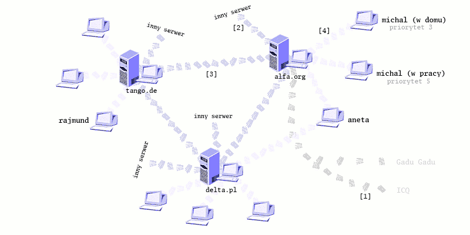
Sieć Jabbera w swoim działaniu podobna jest do działania poczty
elektronicznej. Mamy wiele serwerów, które komunikują się między sobą. Na
rysunku mamy przykładowe serwery alfa.org,
delta.pl oraz tango.de. Wszystkie serwery
komunikują się ze sobą co zaznaczone jest jako ciemno fioletowe połączenia
[3]. Serwery na rysunku
komunikują [2] się także
z wszystkimi innymi serwerami na świecie oznaczonych jako inny serwer. Na serwerach
użytkownicy rejestrują konta. Użytkownik rajmund zarejestrował się na serwerze
tango.de, użytkownik michal zarejestrował się na serwerze
alfa.org, a użytkownik aneta ma konta na dwóch serwerach alfa.org
oraz delta.pl. Posiadanie konta na danym serwerze jest
jednoznaczne z posiadaniem identyfikatora nazywanego Jabber ID
(w skrócie JID).
Użytkownik rajmund identyfikowany jest przez JID rajmund@tango.de,
michal jako michal@alfa.org, a aneta
posiada dwa konta na różnych serwerach, czyli także dwa identyfikatory
aneta@delta.pl oraz aneta@alfa.org. Wszyscy nasi
przykładowi użytkownicy są zalogowani do swoich serwerów - symbolizuje to
jasno fioletowa linia [4]. Użytkownik aneta zalogowany jest
jednocześnie do dwóch serwerów, a użytkownik michal korzysta z
funkcji oferowanej przez sieć Jabbera czyli podwójnego logowania. Inne
sieci, gdy próbujemy zalogować się podwójnie, odrzucają jedno z połączeń.
Tutaj mamy możliwość wielokrotnego logowania i określenia ważności naszego
połączenia przez nadanie mu odpowiedniego priorytetu. Wiadomości do nas
dochodzą do komputera gdzie zalogowani jesteśmy z wyższym priorytetem.
Przykładowy michal jest teraz w pracy, gdzie zalogowany jest z
priorytetem równym 5. Wszystkie wiadomości do niego kierowane są do
komputera w pracy. Kiedy skończy pracę i wyłączy swój komputer, pozostanie
jeszcze komputer domowy, który cały czas jest zalogowany do sieci. Teraz
wszystkie wiadomości trafiają do niego. Wszyscy nasi użytkownicy mogą się
między sobą komunikować. Użytkownik rajmund może wysłać
wiadomość do użytkownika na innym serwerze, czyli przykładowo do
użytkownika aneta. Użytkownik aneta posiada dwa
konta na oddzielnych serwerach. Jeżeli jeden z serwerów przestanie działać,
zawsze ma do dyspozycji swoje drugie konto. Mimo awarii działania jednego
serwera cała sieć działa prawidłowo. Kontakt utracony jest nie ze
wszystkimi użytkownikami, ale tylko z użytkownikami wyłączonego serwera. Na
koniec warto wspomnieć jak odbywa się komunikacja z innymi sieciami typu
Gadu-Gadu czy ICQ [1]. Użytkownik komunikuje się tylko z serwerem,
przez serwer wysyła wiadomości, a jego kontakty przechowywane są także na
serwerze. Jeżeli nasz serwer umożliwia nam komunikację z innymi sieciami
przez tzw. transporty, nasza wiadomość przeznaczona do użytkownika danej
sieci dochodzi do serwera, a serwer po przekształceniu jej na odpowiedni
format przesyła dalej do serwera innej sieci. Oczywiście musimy posiadać
konto (numer GG, czy UIN) w danej sieci, żeby do niej
cokolwiek wysłać czy odbierać.
4. Zdecydowałem sie, co mam robić
Wszelkie podstawowe informacje uzyskasz na tej stronie. Na początek musisz wiedzieć, że Jabber nie działa tak samo jak inne komunikatory. Nie posiada on centralnego punktu, serwera. Zasada działania podobna jest do działania poczty elektronicznej. Na świecie jest tysiące serwerów, które komunikują się ze sobą. Tak samo jak w poczcie musisz wybrać serwer, który najbardziej tobie odpowiada oraz wymyślić sobie swój identyfikator, który będzie nas na tym serwerze identyfikował.
Więcej informacji znajduje się na oficjalnych stronach poświęconych Jabberowi
5. Serwer
Serwer
Serwer to program udostępniający swoje usługi innym programom, które są nazywanymi klientami.
Najważniejszy jest wybór odpowiedniego serwera. Dalsze poczynania z XMPP/Jabber zależą wyłącznie od niego. Oczywiście nic nie stoi na przeszkodzie aby mieć dwa lub więcej kont i używać ich zamiennie. Nie można powiedzieć "Jabber mi nie działa" - sieć XMPP/Jabber działa bardzo dobrze, to jedynie twój serwer może mieć problemy. Odpowiedni wybór uchroni nas od wszelkich komplikacji.
Czyli powtórzę jeszcze raz aby bezproblemowo korzystać z sieci Jabbera trzeba koniecznie wybrać stabilny i godny zaufania serwer. Reguły nie ma, może to być jeden z wielkich czołowych serwerów publicznych, ale może lepiej wybrać mały osiedlowy prowadzony przez znajomego admina.
Wybierając serwer prowadzony przez hobbystów otrzymamy serwer o największej liczbie nowych rozwiązań, ale bez wsparcia finansowego będzie on prawdopodobnie czasem niestabilny. Może nawet pewnego dnia po prostu zniknąć. Wybierając serwer za którym stoi firma, i pieniądze, zawsze musimy pamiętać, że rządzić się on może własnymi prawami i prawdopodobnie działa po to żeby na siebie zarobić. Trzeba wyśrodkować swoje potrzeby, oczekiwania i wybrać serwer najlepszy dla siebie.
Jeżeli zależy nam na oficjalnym identyfikatorze wybierzemy sobie serwer
jabber.org. Jeżeli wolimy coś krótszego to może zainteresujemy
się serwerem jid.pl. Jeżeli chcemy serwer komercyjny mamy
serwer firmowany przez Wirtualną Polskę czyli jabber.wp.pl.
Mamy naprawdę duży wybór i należy ten fakt wykorzystać. W ostateczności
możemy samemu postawić własny serwer, który, jeżeli jesteśmy wymagającym
użytkownikiem, z pewnością będzie najbardziej wygodnym dla nas
rozwiązaniem.
- jabber.org
- jabber.uznam.net.pl
- jabber.piekary.net
- jabber.elektron.com.pl
- jabster.pl
- jabber.wp.pl
- histeria.pl
- jabber.gda.pl
- jabber.2000-plus.pl
- jabber80.com
- jabber.alternatywa.info
- KDETalk.net
- ubuntu-users.com
- jid.pl
- jabbim.pl
Jeżeli dysponujemy odpowiednim komputerem, możemy postawić własny serwer Jabbera, który oczywiście jest darmowy.
- Przykładowy serwer Jabbera/XMPP, jak zachwalają twórcy jest on darmowy, wieloplatformowy (napisany w Javie), prosty w instalacji i z wygodnym interfejsem via WWW. Możesz postawić swój serwer w kilkanaście minut tak prosto jak zainstalowałeś swojego klienta. Nie musisz spędzić całego dnia na jego konfiguracji.
- Lista serwerów które możemy uruchomić na własnej maszynie
Enterprise Instant Messaging
Poniższy kawałek to krótki opis produktów firmy Jive. Dzięki nim możemy bardzo szybko zbudować we własnej firmie własną sieć służącą do wewnętrznej komunikacji. Pokazać chcę także, jak prosto można wykorzystać Jabbera do stworzenia samemu podobnych rozwiązań. Produkty Jive to bardzo prosty w obsłudze serwer, klient oraz narzędzia dodatkowe ułatwiające zarządzanie całością. Ciekawym rozwiązaniem jest tzw. skinning czyli proste dostosowanie komunikatora do danej firmy. Mamy możliwość dodania własnego logo, zamknięcia i ograniczenia komunikacji do firmowego serwera. Całość jest dodatkowo wspierana przez menadżera, który ułatwia łatwe zapanowanie nad wszystkim.
Ponieważ używanie w firmach komunikatorów to rzecz dziś raczej naturalna więc stworzenie własnego rozwiązania będzie tylko lekkim ustandaryzowaniem samej komunikacji. Ograniczenie do firmowego serwera i firmowego komunikatora może zwiększyć bezpieczeństwo. Dodanie identyfikatorów podobnych, czy wręcz identycznych, do tych używanych w poczcie elektronicznej sprawi, że komunikacja za pomocą komunikatora stanie się bardziej naturalna. Do tego warto wspomnieć o takich aspektach jak odgórne zarządzanie listą kontaktów użytkowników. Dodawanie automatyczne pracowników współpracujących ze sobą, działów czy osoby z tzw. pomocy technicznej. Wszystkie te rzeczy to rozwiązania raczej niespotykane w innych protokołach służących do komunikacji błyskawicznej. Enterprise Instant Messaging to rzecz przydatna. Należy wspomnieć, że rozwiązania takie to dobry pomysł także w innych organizacjach, szkołach, uczelniach wyższych.
6. Klient Jabbera
Klient
Klient to program pozwalający na połączenie się z serwerem i korzystanie z jego usług.
Słowami wstępu warto zacytować Encyklopedię Wikipedia i poprawnie zdefiniować klienta - tak aby uniknąć mylnego łączenia sieci z samym klientem, co ma miejsce przykładowo dla GG. Jabber nie ma odgórnie narzuconego jednego programu. Co więcej, samych programów umożliwiających korzystanie z Jabbera jest dziesiątki.
W odniesieniu do komputerów klient oznacza oprogramowanie
korzystające z usług dostarczanych przez serwer. Przykładem może być cała
rodzina oprogramowania typu telnet czy ssh. Jednym z klientów w tej
rodzinie jest putty - program pozwalający użytkownikowi na korzystanie z
usług na zdalnym komputerze.
- Wikipedia, Wolna
Encyklopedia
Wracając do spraw Jabbera, drugim ważnym wyborem jest wybór klienta,
możemy przejrzeć je wyszukując na Google jabber client
(zobacz
wyniki szukania "jabber client"), albo skorzystać z pomocy strony
z listą
klientów XMPP/Jabber na stronie Wikipedia. Klientów jest dużo, są one
dostępne na wiele platform: Amiga, MacOSX, MacOS9, J2ME RIM, J2ME, Java,
PalmOS, Symbian, WinCE, Linux/Unix, Windows, Przeglądarki Internetowe
(WWW), PocketPC, BeOS, Smartphone czy jako plugin Mozilla.
Klienty Jabbera szerzej opisane na tej stronie
- Spik; klient promowany przez portal Wirtualna Polska;
- Konnekt; polski multikomunikator;
- Psi; wieloplatformowy klient Jabbera;
- Jajc; rozbudowany windowsowy klient Jabbera;
- Pandion; lekki windowsowy klient Jabbera;
- Pidgin; wieloplatformowy multikomunikator i klient Jabbera;
- Miranda; lekki multikomunikator;
- Gajim; komunikator dla użytkowników Gtk+ i nie tylko;
- Google Talk; komunikator Google oparty o otwarte technolgie;
- Kopete; Miły dla oka komunikator dla KDE;
- Gizmo; VoIP z obsługą Jabbera;
- iChat; Komunikator dla komputerów z pod znaku jabłka;
Klienty nieopisane tutaj szerzej, ale także warte uwagi
- EKG2; klient Jabbera w trybie tekstowym;
- JWChat; klient Jabbera napisany w Java Script;
- Jeti; kolejny klient Jabbera napisany w Javie.
- Meebo; interesujący klient na stronie WWW;
- JBother; napisany w Javie więc dostępny na każdej platformie oraz na stronie WWW;
- WengoPhone; wieloplatformowy klient Jabbera oraz SIP
- Nokia Ovi Contacts; natywna platforma komunikacyjna Nokii dla telefonów z systemem operacyjnym S60
Polskie akcenty jabberowe, czyli klienty
umożliwiające korzystanie z Jabbera pisane przez Polaków 
- Spik (opisywany szerzej niżej);
- Konnekt (opisany szerzej niżej);
- WTW nazywany przez niektórych następcą Konnekta;
- Gnu Gadu;
- Papla;
- Hapi;
Aktualna lista dostępna jest na na stronach encyklopedii Wikipedia oraz na stronach protokołu. Można porównać także możliwości klientów Jabbera z klientami innych sieci.
Adium X, Agile, Akeni, Ayttm, BuddySpace, Cabber, centericq, Chatopus, Chatterbox, CJC, Coccinella, Colibri, e4Applet, Enigma3, EntreatCE, Exodus, Fire, Gabber1, Gabber2, Pidgin, GCN, Gnome Jabber, GNU Gadu, Gossip, GreenThumb, Gush, IMChat, IMCom, imov, IR-Jabber, IRSIM, Jabber for BeOS, Jabber Messenger J2ME, Jabber Messenger Pocket, Jabber Messenger RIM, Jabber Messenger Smartphone, Jabber Messenger Symbian, Jabber Messenger WebClient, Jabber Messenger Windows, jabber.el, JabberApplet, JabberFoX, Jabbernaut, JabberWana, Jabberwocky, JabberX, Jabberzilla, JAJC, Jeti, JWChat, JWGC, Kava, kf, KomKom, Kopete, Lluna, MessageMate, MiMessenger, MirandaIM, mjabber, myJabber, myJabber IM for Pocket PC, neos, Nitro, Pandion, Proteus, Psi, Rhombus IM Client, Rhombus IM Mobile Client, Rival, SIM, Syndicon, TipicIM, TipicMe, Tkabber, tkJabber, TransactIM, Trillian Pro, TSIM, TVJab, UNIVerse, Vista, Spik, wxSkabber, Yabber.
6.1 Psi
Jeden z najstarszych i najchętniej używanych komunikatorów XMPP/Jabber. Ceniony za swoją dojrzałość i stabilność. Posiada szereg zaawansowanych funkcji, a ostatnio także coraz więcej nowości, które co dopiero zostały opisane jako nowe kierunki rozwoju (Jingle, PEP, XEP-0070, pełna lista dostępnych rozszerzeń).
Wielopfatformowy i używany zarówno pod Windows, jak i pod Linuksem. Co więcej polecany pod GNOME i KDE. Z możliwością używania wielu kont i nieczęsto spotykanymi funkcjami takimi jak: szyfrowanie rozmów za pomocą kluczy GPG czy umieszczanie wzorów TeX w tekście rozmowy.
Jeżeli potrzebujesz kilku dodatkowych zrzutów ekranu zajrzyj do sekcji Psi krok po kroku. Więcej informacji tradycyjnie na stronie domowej programu.
- Dostępny na wiele platform;
- Obsługa wielu kont;
- Prosty i przejrzysty interfejs;
- Dostępne spolszczenie programu;

- Sprawdzanie pisowni w języku polskim;
- Możliwość wykorzystania szyfrowania PGP (trzeba dysponować programem GPG), szyfrowania komunikacji klient - klient;
- Pełna przeglądarka usług na serwerach Jabbera;
- Obsługa Jingle (rozmowy głosowe);
- Wsparcie dla XEP-0070;
- Dla niektórych zbyt ascetyczny;
- Czasem niekoniecznie intuicyjny;
Więcej zrzutów ekranu można zobaczyć w sekcji Psi krok po kroku.
6.2 Jajc
Rozbudowany klient Jabbera. Ciekawostką jest obsługa skinów Windowsa XP,
które można sobie zaaplikować z http://www.themexp.org/, dysponuje także
takimi funkcjami jak potwierdzenia odebrania wiadomości czy znane z
GG statusy offline. Jest możliwość
używania PGP.
Zakładanie konta oraz używanie Jajca krok po kroku opisane są na http://jajc.pjwstk.edu.pl/, strona domowa
jest natomiast tutaj http://jajc.ksn.ru/.
Aby szyfrować nasze wiadomości PGP, można skorzystać z wersji programu darmowych dla użytku domowego. Lista dostępna pod adresem: http://www.pgpi.org/products/pgp/versions/freeware/.
- Łatwo rozszerzalny przez system wtyczek;
- Dostępne spolszczenie programu;
- Możliwość wykorzystania szyfrowania PGP (trzeba dysponować programem PGP), do szyfrowania komunikacji klient - klient;
- Korzysta z windowsowych skórek;
- Pełna przeglądarka usług na serwerach Jabbera;
- Import i eksport kontaktów
- Dostępny tylko dla Windows;
- Przez mnogość opcji może być trudny w konfiguracji;
- Czasami zbyt rozbudowany i zasobożerny;
- W niektórych miejscach nieintuicyjny interfejs;
- Ostatnio mało dynamicznie rozwijany;

Więcej zrzutów ekranu można zobaczyć w sekcji Jajc krok po kroku.
6.3 Pandion
Łatwy w obsłudze, w polskiej wersji językowej i bardzo ładnie się prezentujący. Może i brak mu kilku zaawansowanych funkcji, ale na pewno jest dobrym rozwiązaniem dla początkujących. Wszystko jasno i przejrzyście. Opisy kontaktów pod kontaktami, tak jak w oryginalnym kliencie GG. Strona domowa http://www.pandion.be/.
Jeżeli podoba ci się Pandion, warto przyjrzeć się polskiemu komunikatorowi tworzonemu na podstawie Pandiona, stąd bardzo duże podobieństwo, czyli komunikatorowi Hapi. Ponieważ tworzony przez Polaków, bardziej odnosi się do naszych polskich realiów, co czasem jest pomocne. Sam Hapi jak na razie jest jeszcze w fazie rozwoju. Twórcy chcą stworzyć przyjazny użytkownikowi i łatwy w obsłudze komunikator.
- Polska wersja językowa (wybór przy instalacji programu);
- Prosta konfiguracja;
- Miły dla oka interfejs;
- Wbudowane ikony dla różnych sieci (Gadu-Gadu, czy programów Psi, Tlen itd.);
- Małe rozmiary i stosunkowo mało zasobożerny;
- Dostępny tylko dla Windows, bardzo mocno powiązany z Internet Explorerem;
- Brak możliwości wysyłania wiadomości w trybie message;
- Brak pełnej przeglądarki usług na serwerach Jabbera;
- Nieco cukierkowy wygląd;
Więcej zrzutów ekranu można zobaczyć w sekcji Pandion krok po kroku.
6.4 Spik
natywny
Jeżeli usługa taka jak GG czy ICQ jest natywna, znaczy to że nasz klient ma w sobie program do porozumiewania się z tymi sieciami. Program odpowiada za połączenie z innymi sieciami i komunikacje.
transport
Jeżeli usługa jest oparta o transporty (tzw. bramki) na serwerze, znaczy to że nasz klient wysyła informacje do serwera, który tłumaczy je i porozumiewa się z innymi sieciami. Serwer odpowiada za połączenie i komunikacje.
natywność vs. transporty
Podejście natywne jak i transporty mają swoje plusy i minusy. Jeżeli transport działa źle np.: z powodu przeciążenia, nasza komunikacja z inną siecią będzie przerywana. Rozwiązanie oparte o biblioteki natywne zazwyczaj działa bezproblemowo. Jednak kiedy wykorzystujemy transporty zyskujemy dużą swobodę i uniwersalność. Każdy inny klient jabberowy będzie potrafił używać naszych kontaktów. Jeżeli korzystamy z transportów zmiana klienta będzie niezauważalna. W przypadku usług natywnych nie możemy zmienić programu na inny bez zmian w konfiguracji, zazwyczaj w takiej sytuacji przenoszone są tylko kontakty jabberowe, trzymane po stronie serwera.
Ciekawostką jest promowanie Jabbera przez portal Wirtualna Polska, ich komunikator Spik (dawny wpkontakt), który mógłby wydawać się powinien być zamknięty tylko dla użytkowników portalu, sam wykorzystuje protokół XMPP/Jabber i pozwala na komunikację z innymi użytkownikami. Więcej informacji na stronie http://spik.wp.pl/.
Wirtualna Polska stawia na otwarte standardy i do komunikacji głosowej dodatkowo wykorzystuje protokół SIP. To czyni z ich komunikatora pełny zamiennik zasobożernego Skype.
Jeżeli masz problem z instalacją i konfiguracją koniecznie zerknij na stronę domową z pomocą lub zadaj pytanie konsultantowi - szczegóły na stronie domowej programu.
- Coś czego nie ma nigdzie indziej czyli żywy konsultant odpowiadający na wszystkie pytania związane z programem;
- Polski produkt, polska wersja językowa, polskie strony z pomocą;
- Prosta konfiguracja (do uruchomienia GG czy ICQ wystarczy jedno kliknięcie myszą);
- Możliwość sprawdzania poczty;
- Zapisywanie ustawień prosto na serwerze, po zalogowaniu w każdym miejscu nasz Spik wygląda jak sobie ustawiliśmy;
- Możliwość rozmów głosowych i wideo konferencji (tylko między użytkownikami Spik) ;
- Natywna obsługa sieci Gadu-Gadu oraz ICQ (uniezależnienie się od nieraz niestabilnych transportów umieszczonych na serwerach);
- Multimedialne dodatki takie jak odczytywanie treści wiadomości w języku polskim przez syntezator mowy oraz możliwość rozmów głosowych za pomocą protokołu SIP;
- Dostępny tylko dla Windows;
- Brak pełnej przeglądarki usług na serwerach Jabbera;
- Czasami denerwujący interfejs, dużo "upiększaczy" i wyskakujących okienek (kwestia gustu);
- Niektóre opcje niekompatybilne z innymi klientami Jabbera (np.: przesyłanie plików, rozmowy głosowe i wideokonferencje) czyli dostępne tylko dla użytkowników tego klienta;
- Brak możliwości wysyłania wiadomości w trybie message;
- Natywna obsługa sieci Gadu-Gadu oraz ICQ (brak przenośności jaka istnieje w przypadku korzystania z transportów);
Więcej zrzutów ekranu można zobaczyć w sekcji Wpkontakt/Spik krok po kroku.
6.5 Pidgin
Multikomunikator
Multikomunikator to specyficzny rodzaj komunikatora internetowego pozwalający na korzystanie z kilku sieci naraz.
Pidgin to rozbudowany multikomunikator oraz klient Jabbera. Obsługuje wiele protokołów natywnie (Gadu-Gadu, IRC, ICQ itd.). Dodatkowo istnieje możliwość rozbudowania go o nowe wtyczki, które możemy sami sobie napisać. Program jest całkowicie spolszczony, a od wersji 2.0 może pochwalić się jednym z lepszych i bardziej przejrzystych interfejsów użytkownika. Mimo, że nie jest to tylko klient Jabbera, przez co nie oferuje wszystkich rozszerzeń protokołu Jabber, można go śmiało wszystkim polecić bo jest to naprawdę dopracowany program. Więcej informacji na stronie domowej komunikatora.
Ciekawostką jest tekstowa wersja komunikatora, nazywana Finch, oparta o te same biblioteki co Pidgin. Finch jest przeznaczony dla systemów unixowych, uruchomiony na komputerze gdzie działa już Pidgin będzie korzystał z tych samych plików konfiguracyjnych. Umożliwia to na łatwe odpalenie tego komunikatora zdalnie spoza domu bez konieczności ponownego konfigurowania czy rozdwajania historii rozmów. Zrzut ekranu komunikatora Finch można zobaczyć poniżej.
Jeżeli szukałeś komunikatora GAIM to chciałem przypomnieć, że to stara nazwa komunikatora Pidgin. W skutek ugody prawnej między AOL a twórcami komunikatora, zmieniono jego nazwę tak aby nie kojarzyła się z podobnym produktem firmy AOL.
- Dostępny także w wersji tekstowej (tylko systemy unixowe)
- Dostępny na wiele platform;
- Obsługa wielu kont dla każdego protokołu;
- Spolszczenie dostępne już w czasie instalacji, sprawdzanie pisowni w
oknie rozmowy;
- Prosta obsługa;
- Rozszerzalny przez system wtyczek;
- Namiastka meta kontaktów (chowanie wielu kontaktów do tej samej osoby w jednym wpisie na liście kontaktów)
- Rozbudowany i bardzo dobrze zaprojektowany interfejs
- Natywna obsługa wielu sieci (oprócz Jabbera także Gadu-Gadu, ICQ, Yahoo, MSN, IRC etc. - uniezależnienie się od nieraz niestabilnych transportów umieszczonych na serwerach)
- Zintegrowane z kontem Google Mail powiadomienia o poczcie
- Brak możliwości wysyłania wiadomości w trybie message;
- Brak pełnej przeglądarki usług na serwerach Jabbera;
- Natywna obsługa wielu sieci (brak przenośności jaka istnieje w przypadku korzystania z transportów);
6.6 Konnekt
Polski multikomunikator oferujący w zestawie wtyczek wtyczkę umożliwiającą korzystanie z sieci Jabbera. Sam program jest miły dla oka i przyjazny nawet dla początkującego użytkownika. Dodatkowo to, że jest pisany przez Polaków, posiada różne rozszerzenia nie oferowane przez innych np.: wklejanie obrazków w okno rozmowy z użytkownikiem sieci Gadu-Gadu. Strona domowa Konnekta to http://www.konnekt.info/.
Komunikator aktualnie nie jest już czynnie rozwijany, chociaż dalej ma dużą rzeszę zwolenników.
- Polski program, polska wersja językowa, polska pomoc dostępna na
stronie domowej;
- Pomysłowe, znane z ICQ, kilka poziomów obsługi programu dla nowicjuszy i zaawansowanych użytkowników;
- Rozszerzalny przez system wtyczek;
- Do wyboru pluginy z natywną obsługą wielu sieci (Gadu-Gadu i inne);
- Stonowany interfejs (dostępne także wodotryski typu przeźroczystość);
- Projekt aktualnie praktycznie martwy;
- Dostępny tylko dla Windows;

6.7 Miranda
Rozbudowany multikomunikator z dużą ilością rozszerzeń. Miranda jest miła dla oka, prosta i mała. Przez ograniczenie się tylko do potrzebnych funkcjonalności i wyłączenie zbędnych wtyczek zajmuje mało zasobów. Dzięki przemyślanemu interfejsowi może dodatkowo zajmować bardzo małą część pulpitu. Dodatkowo można poeksperymentować z przeźroczystością okienka. Więcej informacji na stronie domowej Mirandy oraz na polskim forum Mirandy.
- Dostępne spolszczenie (plugin);
- Mały rozmiar pakietu instalacyjnego, mało zasobożerny, zajmuje mało miejsca na pulpicie;
- Rozszerzalny przez system wtyczek (chyba największa liczba dostępnych wtyczek ze wszystkich komunikatorów);
- Do wyboru pluginy z natywną obsługą wielu sieci (AIM, IRC, Gadu-Gadu);
- Stonowany interfejs(dostępne wodotryski typu przeźroczystość);
- Duże polskojęzyczne forum poświęcone Mirandzie gdzie można poszukać odpowiedzi na każde swoje pytanie;
- Dostępny tylko dla Windows;
- Mnogość wtyczek może przerazić nowicjusza;
6.8 Gajim
Gajim to bardzo przyjemny dla oka i szybko rozwijany klient Jabbera. Napisany jest z myślą o użytkownikach GTK+, więc ucieszy pewnie szczególnie zwolenników GNOME. To wszystko zainteresuje użytkowników Linuksa, a oczywiście istnieje także wersja dla systemu Windows. Więcej informacji na stronie domowej projektu.
- Dostępny na wiele platform;
- Miły dla oka i ergonomiczny interfejs;
- Obsługa wielu kont;
- Współpraca z Open PGP (GnuPG);
- Polska wersja językowa, sprawdzanie pisowni w oknie rozmowy;
- Obsługa metakontaktów;
- Wsparcie dla Google Mail, powiadomienie o nowej poczcie;
- Wsparcie dla XEP-0070;
- Problemy z szybkością działania przy wielu zdarzeniach;
- Wersja dla Windows nie wpasowuje się zbyt dobrze w systemowy wygląd;
6.8 Google Talk
Komunikator wspierany przez Google. Na razie jest w fazie testów i nie oferuje wielu funkcji, ale ma nadrobić to w przyszłości, można go traktować więc jako ciekawostkę. Oferuje on możliwośc komunikacji tekstowej opartej o technologie XMPP/Jabber oraz rozmów głosowych VoIP. Oprócz funkcji dobrze znanych z komunikatorów firma Google zadbała o dobrą integracje ze swoim serwisem poczty elektronicznej Google Mail. Więcej informacji na oficjalnej stronie projektu.
Ostatnim ruchem Google była integracja komunikatora z pocztą elektroniczną. Teraz możliwa jest zwykła rozmowa z poziomu WWW Google Mail. Dodatkowo możliwe jest wyszukiwanie archiwalnych rozmów tak samo jak archiwalnych listów. Historia gdy ją włączymy, zapisywana jest na serwerze zawsze kiedy używamy naszego konta, bez względu na to czy robimy to z poziomu WWW, Google Talk, czy za pomocą innego klienta Jabbera.
- Niewielki rozmiar;
- Ergonomiczny i miły dla oka interfejs;
- Zintegrowany z pocztą Google Mail, dostępny jest z poziomu WWW
- Możliwość prowadzenia pełnej historii rozmów składowanej po stronie serwera i wyszukiwanie w niej za pomocą mechanizmów Google także z poziomu interfejsu WWW poczty Google Mail;
- Wspierany przez silną firmę;
- Implementacja Jingle (rozmowy głosowe);
- Możliwość podpięcia konta wraz z resztą aplikacji pod własną domenę.
- Duża możliwość rozwoju i dodania ciekawych innowacji;
- Globalność, czyli raczej zapomnijmy o oficjalnym transporcie GG etc.;
- Google Talk potrafi korzystać tylko z serwera Google;
- Ciągle jest to wersja beta;
6.9 Kopete
Potężny multikomunikator pisany specjalnie dla KDE. Wspiera wiele protokołów i jest cały czas prężnie rozwijany. Rozszerzalny o dodatkowe pluginy. Posiada wiele zaawansowanych funkcji. Można go dowolnie konfigurować, wpływać na wygląd samej konwersacji, przypinać awatary do kontaktów. Więcej informacji na stronie domowej projektu.
- Wspiera wiele protokołów (multikomunikator);
- Miły dla oka, ładnie prezentuje się styl rozmowy ala iChat (na screenie);
- Szyfrowanie rozmów GPG, korzystanie z TeX i inne użyteczne pluginy;
- Wspierany przez dużą społeczność;
- Najlepiej prezentuje się na KDE.;
- Dostępny tylko dla systemów linuksowych.;
(Niestety nie miałem możliwości zrobienia screenów pod KDE)

{kind=link}
{kind=link}
{kind=link}
{kind=link}
{kind=link}
{kind=link}
{kind=link}
{kind=link}
{kind=link}
{kind=link}
{kind=link}
{kind=link}
{kind=link}
{kind=link}
{kind=link}
{kind=link}
{kind=link}
{kind=link}
{kind=link}
{kind=link}
{kind=link}
{kind=link}
{kind=link}
{kind=link}
{kind=link}
{kind=link}
{kind=link}
{kind=link}
{kind=link}
{kind=link}
{kind=link}
{kind=link}
{kind=link}
{kind=link}
{kind=link}
{kind=link}
{kind=link}
{kind=link}
6.10 Gizmo
Gizmo to alternatywa dla rozmów głosowych w Internecie, tzw. telefonii
internetowej. Wspiera otwarty standard dla rozmów głosowych SIP oraz
otwarty standard dla rozmów tekstowych. Kontakty na liście kontaktów oprócz
numerów telefonu czy numeru SIP posiadają miejsce na wpisanie Jabber ID.
Pozwala to na komunikacje tekstową z użytkownikami Jabbera. Każdy
użytkownik Gizmo jest widoczny jako normalny kontakt na serwerze
chat.gizmoproject.com.
Pomimo tylko podstawowego wsparcia dla Jabbera sam klient jest wart uwagi z powodu obsługi protokołu SIP. Jest to pełnowartościowa zamiana dla komunikatora Skype, a do tego oparta o otwarte standardy. Więcej informacji na stronie producenta.
- wieloplatformowy (Windows, Linux, Mac)
- wsparcie dla SIP
- możliwość telefonowania na telefony stacjonarne i komórkowe
- możliwość komunikacji PC - PC
- tylko podstawowe wsparcie Jabbera
{kind=link}
{kind=link}
{kind=link}
6.11 iChat
Podstawowy multikomunikator w systemach Mac OS X. Dostępny za darmo dla każdego użytkownika komputerów Apple. Obsługuje protokoły AOL (Aim screen name, ICQ Uin, netscape.net screen name, oraz dedykowane konto .mac) i Jabber. Chociaż brak w nim wsparcia dla przesyłania plików między różnymi klientami zgodnymi z XMPP to przyjazny interfejs, prosta obsługa i integracja z systemem operacyjnym sprawił, że iChat zyskał sobie wielu zwolenników. Więcej na stronie producenta.
- polska wersja językowa (ver. 10.5)
- integracja z systemem operacyjnym
- wsparcie dużej firmy - Apple
- prosta obsługa
- przyjazny interfejs
- dostępny tylko dla Mac OS
- brak zaawansowanych funkcji takich jak np.: przeglądarka usług na serwerze
{kind=link}
{kind=link}
{kind=link}
(Informacje o iChat i zrzuty ekranów zebrane przez Glubone. Lista kontaktów pochodzi z jednej ze stron w sieci.)
7. Mam konto, co dalej
Transport
Transport na serwerze Jabbera, zwany także bramką, od ang. gateway, to specjalny program tłumaczący informacje pomiędzy różnymi sieciami. Umożliwia to dostęp i rozmowę z użytkownikami innych sieci takich jak GG czy ICQ.
roster
Roster to tzw. lista kontaktów, ang. contact list, przechowywany na serwerze spis wszystkich znajomych użytkowników.
Jeżeli wybór komunikatora jest już za tobą, posiadasz już konto na serwerze i je poprawnie skonfigurowałeś. Możesz spróbować dodać pierwszego użytkownika do swojej listy kontaktów. Lista kontaktów jest trzymana na serwerze, więc mamy ją zawsze pod ręką obojętnie z jakiego miejsca się łączymy.
Każdy użytkownik jest opisany przez swój identyfikator na danym
serwerze. Identyfikator ten nazywany jest Jabber ID, w skrócie
JID. Jego
znaczenie odszyfrowujemy podobnie jak adres poczty elektronicznej. Dla
użytkownika gosia@chrome.pl oznacza on danego użytkownika o
identyfikatorze gosia na serwerze chrome.pl.
Jeżeli chcemy dodać do naszej listy kontaktów, nazywanej też czasami
jako roster,
użytkownika, ograniczamy się do wpisania jego JID. Następnie musimy wysłać swoją
autoryzację (authorize to) oraz poprosić o autoryzację (authorize from) od
danego użytkownika. Bez autoryzacji nie będziemy widzieć czy dany
użytkownik jest online.
Teraz przyszedł czas na dodanie użytkowników innych sieci, czyli
skorzystanie z transportów. Każdy serwer posiada własne transporty, czyli
bramki konwertujące wiadomości pomiędzy różnymi sieciami. Pierwszą rzeczą
jaką musimy zrobić to sprawdzić jakie transporty są na naszym serwerze.
Następnie lokalizujemy przykładowo transport GG i najczęściej prawym kliknięciem dostajemy
się do menu podręcznego gdzie można wybrać opcje zarejestruj.
Po otworzeniu okienka wpisujemy swój numer GG oraz hasło. Po zaakceptowaniu i krótkiej chwili
otrzymujemy informacje że zostaliśmy autoryzowani przez bramkę. Od tej
chwili możemy dodawać użytkowników GG
do swojej listy. JID dla takiego użytkownika wygląda
zazwyczaj podobnie do 123456@gg.chrome.pl.
8. Reszta transportów
Oprócz transportów typu GG, ICQ, MSN za pomocą których możemy komunikować się z innymi sieciami, istnieją także inne. Warto zarejestrować się w katalogu publicznym. Tak aby inni mogli nas wyszukać gdy zajdzie taka potrzeba. Można sprawdzić pogodę w pogodynce czy wysłać pocztę. Szczegóły dotyczące transportów znajdują się zazwyczaj na serwerach. Poniżej przykład pewnego serwera i rozszerzeń na nim zainstalowanych. Lista całkiem imponująca. Listę taką jak ta można uzyskać w każdym kliencie, który posiada tzw. przeglądarkę usług na serwerach. Załączony przykład to usługi wypisane przez komunikator Psi. Przykładowo Spik nie posiada pełnej obsługi tej funkcjonalności.
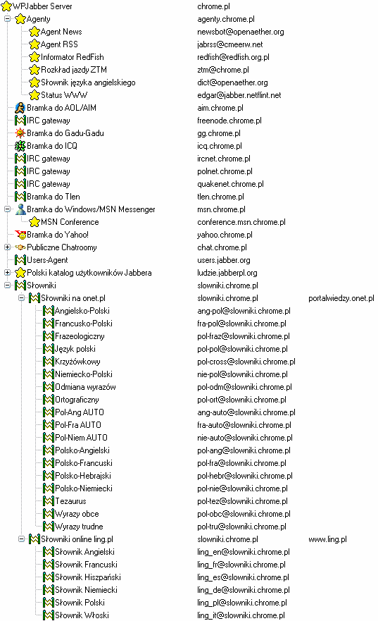
Główne typy rozszerzeń serwera ze względu na ich funkcjonalności można podzielić tak:
- Bramki pozwalające na komunikację z innymi sieciami. Działają na zasadzie tłumacza między nami a użytkownikami innej sieci. Na powyższej ilustracji mamy dostępne bramki do sieci Gadu Gadu, ICQ, IRC oraz innych.
- Jabberowe pokoje rozmów, pozwalają na rozmowy grupowe.
- Wskaźniki np.: pogody. Dodajemy do listy kontaktów a informacje przesyłane są nam jako odpowiedni status czy opis kontaktu.
- Inne rozszerzenia serwera takie jak np.: słowniki czy rozkład jazdy komunikacji miejskiej. Rozszerzenie takie dodajemy tak jak każdą inną osobę na swoją listę kontaktów i odpowiednio zadając pytania otrzymujemy odpowiedzi. Czasami możliwa jest konfiguracja aby to one przysyłały nam pewne informacje. Przykładowo nowe informacje dostępne na stronach za pomocą kanałów RSS.
Dodatki
Mapa użytkowników Jabbera
Jesteśmy wszędzie. Jabbera używamy w Polsce, Europie, Afryce... chcesz pokazać światu gdzie jesteś i że także go używasz - dodaj się do jednej z map.
Dla zachęty poniżej kilka zrzutów ekranów
- 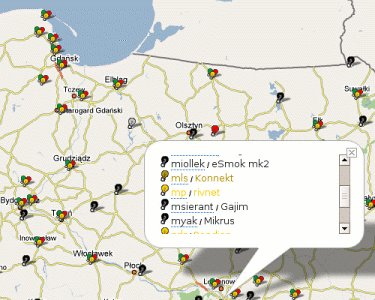
- Jabber w Polsce
- Google Talk w Brazylii
Emotikony innych sieci
Poniżej kilka słów raczej bardziej historycznych. Większość
komunikatorów od razu jest wyposażona w pełen zestaw emotikonek. Jeżeli
jednak używasz Psi i nie możesz się ich doszukać to przeczytaj tekst
poniżej. Oczywiście jeżeli nie posiadasz Psi tylko inny komunikator z
pewnością możesz do niego także dodać ikonki zapisane jako plik
JISP.
Jeżeli podobały ci się stare emotikony z GG, lub po prostu chciałbyś aby to co wypisują do
ciebie użytkownicy GG wyglądało tak
samo możesz ściągnąć zestaw emotikonek z GG. Znajdziesz go na stronie - http://jisp.netflint.net/. Wystarczy pobrać
odpowiedni zestaw, jest on wepchnięty w plik JIPS
przystosowany dla klientów Jabbera (tak, tak, znów XML) potem wrzucić go do
odpowiedniego katalogu, w Psi \iconsets\emoticons i wybrać go
w opcjach. Po kilku klikach możemy cieszyć się emotikonami z
GG w swoim kliencie Jabbera.
Import listy kontaktów sieci Gagu-Gadu
Każdy na początek zabawy z Jabberem, zaczyna narzekać na problemy z importem listy kontaktów. Kiedyś umożliwiał to sam transport GG, co częściowo zostało już poprawione. W części wersji transportu GG funkcja ta została jednak wyłączona, ponieważ jak to zostało ujęte po prostu nie działała. Jeżeli nie wierzymy można zawsze spróbować na własnej skórze. Rozpoczynając rozmowę z transportem GG wpisujemy komendę help, a dalej kierujemy się zgodnie z opisem. Jedna z komend pozwala na import listy kontaktów z serwera.
Dalej nie działa? Abstrahując od tego kto maczał w tym palce i czy to twórcy GG coś sprytnie przeprogramowali, więc jeżeli nie udało się zrobić tego przy rejestracji transportu, trzeba uciec się do innych sposobów. Oczywiście najprostszy to wpisanie ich ręcznie, co zajmie jakieś 5 - 10 minut. Jeżeli jednak nie ma na to czasu lub chęci można spróbować skorzystać z konwertera Chomika. Ogólnie warto przeczytać wszystkie notki z tej strony, bo konwersja ta to ciągle szczypta magii.
Działa? Nie działa? Komunikacja z siecią Gadu-Gadu nie jest częścią protokołu XMPP/Jabber więc nie można mieć tutaj nigdy pewności co do poprawnego wykonania tej operacji.
Boty
Otwartość protokołu XMPP/Jabber pozwala na łatwe tworzenie automatów potrafiących serwować dowolne treści. Programy takie nazywane są najczęściej botami od znanego wszystkim wyrazu robot.
Botów w sieci można znaleźć naprawdę dużo. Od blogów takich jak polski Jogger, ogólnoświatowy Identi.ca, kończąc na serwisach typu Remember The Milk. Istnieją oczywiście boty niezwiązane z żadnym konkretnym serwisem, zainstalowane na dowolnych serwerach i oferujących dostęp do danych rozsianych gdzieś po Internecie (prognoza pogody, program telewizyjny etc.). Poniżej próba zasygnalizowania czego można spróbować poszukać w sieci.
Jogger czyli blog wprost z listy kontaktów
blog
Blog, skrót od ang. weblog, to rodzaj pamiętnika prowadzonego w Internecie.
W oparciu o Jabbera można zrobić dużo, żeby nie powiedzieć wszystko. Każdy posiadacz konta na jednym z serwerów może użyć go do pisania swojego bloga. Wszystkie wpisy mogą zostać dodane prosto z poziomu naszego komunikatora. Dodatkowo przydatną funkcją jest powiadamianie o nowych wpisach czy komentarzach, które także docierają do nas tak samo jak wiadomości od znajomych - szybko i prosto na liste kontaktów.
Mamy do wyboru dwa polskie rozwiązania wypisane poniżej. Pierwszy Jogger to prekursor blogowania przez Jabbera. Drugi Jabba to próba stworzenia serwisu dla blogów ciekawych i wartych czytania. Szczegóły dotyczące obu serwisów można znaleźć na ich stronach internetowych.
Największym serwisem oferującym integracje blogowania z Jabberem jest Live Journal. Z ciekawych rozwiązań można wymienić jednoczesne utworzenie konta na serwerze live-journal.com wraz z tym, które tworzymy za pomocą WWW podczas rejestracji. System pozwala na dodawanie notek z poziomu komunikatora. Lista kontaktów jest zintegrowana z listą naszych znajomych z Live Journal. Serwis nie jest polski, ale większość rzeczy jest tłumaczona na język polski.
Ciekawe jest również to co oferuje Sabifoo. Jest to uproszczony blog wraz z kanałem RSS. Jak opisują na stronie autorzy, można bardzo szybko z własnej listy kontaktów tworzyć kanał RSS. Rozwiązanie idealne dla kogoś, kto nie chce się bawić w rozbudowane blogi, a ma potrzebę publikowania aktualnych wiadomości.
Transport pogody
Konkretny serwer na którym istnieje działający transport pogody może być inny niż opisany poniżej. Najlepiej poszukać go na swoim lub innym popularnym serwerze.
Rejestrując się w transporcie pogody mamy możliwość dodawania do naszej
listy kontaktów pogody dla konkretnych miejscowości. Poniżej przykładowa
pogoda dla Warszawy - warszawa@pogoda.jabberpl.org. Pogoda
dostępna jest także na innych serwerach, przykładowo
warszawa@pogoda.chrome.pl. Oczywiście można wstawiać inne
miasta, pogoda działa dla większości większych miejscowości. Przykładowo
mój rodzinny 80 tysięczny Inowrocław też działa. Informacje o jakich
miastach można uzyskać dane pogodowe najłatwiej uzyskać w przeglądarce
usług danego serwera.
- 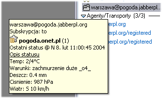
- Przykładowy status kontaktu pogody
Rozkład jazdy warszawskiego ZTM
Konkretny serwer na którym istnieje działający transport ZTM może być inny niż opisany poniżej. Najlepiej poszukać go na swoim lub innym popularnym serwerze.
Dodając do naszej listy kontaktów ztm@chrome.pl kilkoma
klikami uzyskamy informacje na temat konkretnego autobusu czy tramwaju.
Opis możliwości i konfigurację otrzymujemy po wysłaniu do kontaktu tekstu
pomoc. Poniżej przykład działania. Boty rozkładu jazdy
znajdują się także na innych serwerach, więc warto sprawdzić to w
przeglądarce usług.
- 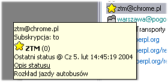
- Kontakt rozkładu jazdy autobusów warszawskiego ZTM
- 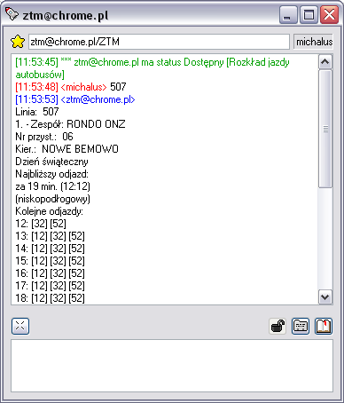
- Przykładowe zapytanie o rozkład jazdy autobusu 507
Słownik polsko-angielski, angielsko-polski
Konkretny serwer na którym istnieją działające słowniki może być inny niż opisany poniżej. Najlepiej poszukać go na swoim lub innym popularnym serwerze.
Dodając do listy kontaktów kontakt
slownik@translator.jabberpl.org możemy szybko przetłumaczyć
pojedyncze wyrazy. Poniżej przykład działania. Dodatkowo dostępne są
słowniki na serwerze chrome.pl, słownik angielsko-polski,
polsko-angielski — ang-pol@slowniki.chrome.pl;
pol-ang@slowniki.chrome.pl; dostępne są też słowniki języka
niemieckiego, włoskiego, hiszpańskiego, ortograficzne itd. Aktualną listę
najlepiej sprawdzić na danym serwerze.
- 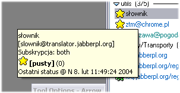
- Kontakt słownika dodany do listy kontaktów
- 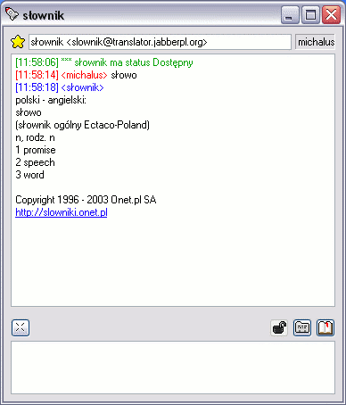
- Przykładowe zapytanie słownika
Nie wszystkie słowniki, ze względu na wyłączenie darmowych słowników Onetu, działają dobrze. Zależy to od słownika i wersji zainstalowanej na danym serwerze.
Wikipedia na rosterze
Jeżeli korzystasz z Wikipedii -
wolnej encyklopedii, to nieraz wygodnie mieć ją prosto na liście kontaktów.
Nic prostszego bo teraz wystarczy dodać tylko JID wiki@jabber.autocom.pl.
Program TV
Konkretny serwer na którym istnieje działający program telewizyjny może być inny niż opisany poniżej. Najlepiej poszukać go na swoim lub innym popularnym serwerze.
Jeżeli chcemy mieć pod ręką program TV wystarczy dodać do swojego
rostera JID
programtv@jabber.autocom.pl. Po wysłaniu komendy "Co teraz
oglądasz" dostajemy listę co dzieje się aktualnie w TV. Dodatkowe komendy
wypisane zostaną po wpisaniu "help".
<michalus> Co teraz oglądasz
<tv> Teraz oglądam kilka fajnych filmów:
10:00 - Skąd się biorą pieniądze? (TVP
1)
10:05 - Szalenie Arystokratyczne Spotkanie z Balladą (TVP 2)
09:45 - Maszyna zmian - Nowe przygody (TV Polonia)
01:30 - Zakończenie programu (Kino Polska)
09:25 - Słoneczny patrol (Polsat)
10:00 - Najzabawniejsze zwierzęta świata (Polsat2)
10:10 - Nie ma sprawy (TVN siedem)
07:25 - Top Shop (Polonia 1)
06:00 - Summer Mix (MTV Polska)
10:00 - Nasza antena (TV Puls)
09:50 - Historia Roberta Wraighta (HBO 2)
10:00 - Taxi 3 (Canal)
09:50 - Nancy Drew (HBO)
08:20 - Telezakupy (Tele 5)
10:00 - Rozmowy w toku (TVN)
10:00 - Słodka trucizna (TV4)
09:35 - Transmisja obrad Sejmu RP (TVP3 Kraków)
10:00 - Turniej towarzyski Alpen Cup w Bolzano (Eurosport - PL)
10:00 - Pływające lwy (Animal Planet)
10:00 - Sturmartillerie (Discovery Channel)
09:30 - Teleshopping (Onyx - PL)
09:50 - Star 6 Music (M6)
08:00 - Wielkie letnie głosowania (Cartoon Network/TCM)
10:10 - Ach, ten Andy! (Fox Kids)
09:35 - Imperium kobiet (Romantica)
Jabber a Tlen
" - (...) Znajomość języków
obcych?
Jakiś obcy język zna pan?
- Jaki?
- Wszystko jedno jaki. Jakiś obcy.
- Nie. To nie znam.
- Nie znam. A słabo?
- Słabo to ten... Yyyy... Jak się nazywa... Yyyy... Francuski.
O!
-- Rejs
Dziwna atmosfera panowała przez wiele lat w stosunkach między użytkownikami sieci Tlen i XMPP/Jabber. Serwer komunikatora Tlen wykorzystujący ten otwarty protokół został zamknięty i pozbawiony możliwości komunikacji z pozostałymi serwerami. Komunikator zamiast łączyć ludzi stawiał sztuczne przeszkody. W sieci pojawiła się petycja żądająca otwarcia sieci. Pojawiały się także artykuły odwołujące się do uczuć wyższych. Mimo usilnych oddolnych prób właściciele Tlen nie zdecydowali się na odważny krok.
Do komunikacji pomiędzy siecią XMPP/Jabber a serwerem Tlen tworzono więc tradycyjne transporty. Stworzono także specjalną wtyczkę dla komunikatora Tlen znaną jako k.jabber oraz k.smok. Tworzono rozszerzenia dla multikomunikatorów takich jak np. Miranda, Konnekt czy Pidgin.
Na nieistniejącej już stronie hype.pl dostępny był jeszcze w okolicach końca roku 2008 wywiad z członkiem zarządu o2.pl gdzie ciągle trzymano się twardej polityki i nie wyrażano zgody na otwarcie serwera.
Zmiany nastąpiły dopiero w
wrześniu 2009 kiedy na serwerze mikroblogowym Pinger Krzysztof
Sierota ogłosił pojawienie się wersji beta komunikatora Tlen 7 gdzie jak
podał [...] Za 2-3 tygodnie ukaże się publiczna beta komunikatora Tlen
7.0 [...] Najważniejsze zmiany: - rozmowa z użytkownikami gTalk i innych
sieci XMPP bez potrzeby zakładania konta XMPP - wsparcie gg8 - całkowicie
nowy silnik komunikatora, wsparcie dla platform MS Windows, MacOS, Linux -
poprawione działanie na Viscie [...] Okrojone wersje Tlenu 7 dostępne są
już na platformy Linux i MacOS [...]
. Serwer komunikatora Tlen został
po ośmiu latach otwarty na komunikację z swoją macierzystą siecią.
Ciekawostką jest także, że Tlen zainteresował się Jabberem tak szybko - styczeń 2001, że jako pierwszy zdążył zarejestrować domenę jabber.pl, która do dziś wskazuje na usługi powiązane z o2.pl. Dlatego flagowa strona polskiej społeczności XMPP/Jabber została postawiona w domenie JabberPL.org.
Szybkie zarządzanie kontaktami na serwerze (Jabber Roster Utility)
Czasami chcemy zarządzać naszymi kontaktami w sposób automatyczny - przykładowo przy migracji z jednego transportu GG na inny itd. Stajemy wtedy przed obliczem ręcznego przepisywania kontaktów, podczas gdy logiczne wydawałoby się podmienienie tylko części ich JID. Właśnie w takiej sytuacji przydaje nam się Jabber Roster Utility. Działajacą stronę łatwo wyszukać w Google. Na stronie z działającym JRU możemy podłączyć się do naszego konta na każdym serwerze XMPP/Jabber i pobrać trzymaną przez serwer listę kontaktów w postaci tekstowej. Przykładowo może to wyglądać tak jak u mnie.
+,login@jabberpl.org,,grupa jabber
+,123456@gg.chrome.pl,Jan Kowalski,grupa gg
+,123457@gg.chrome.pl,Rajmund,grupa gg
+,123458@gg.chrome.pl,Aneta,grupa gg
+,123459@gg.chrome.pl,Ania,grupa gg
+,345678@icq.chrome.pl,Adam,grupa icq
(...)
Na stronie podane są dokładne linki co i jak zrobić, między innymi jak
przejść z jednego serwera na inny. Jednak patrząc na to co otrzymujemy od
serwera łatwo domyślić się samemu o co chodzi. Początkowy + to
nasza autoryzacja, następnie mamy JID, po kolejnym przecinku nick, a na
końcu grupę na liście.
Idea działania podczas przenosin z serwera jest prosta. Potrzebujemy dwóch kont. Pierwsze z kontaktami do przeniesienia, a drugie zazwyczaj puste, konto docelowe. Logujemy się na konto pierwsze i pobieramy kontakty. Prawdopodobnie będziemy potrzebowali kilku zmian w kontaktach, które korzystają z transportów. Tak jak na powyższym przykładzie, transport GG posiada końcówkę gg.chrome.pl, która będzie inna na innym serwerze. Warto również pamiętać o zarejestrowaniu się w transporcie na nowym serwerze przed przeniesieniem kontaktów, które mają z niego korzystać. Zawsze istnieje także możliwość, pozostania przy starym transporcie na starym serwerze. Oczywiście możliwe jest to tylko wtedy, gdy serwer pozwala na korzystanie ze swoich transportów użytkownikom innych serwerów, co nieraz jest zablokowane. Końcową faza to zalogowanie się na nowe konto i zostawienie tam naszych kontaktów pobranych z konta pierwszego wraz z ewentualnymi modyfikacjami.
Zasoby, priorytety, cała prawda
Zasób i priorytet to często nierozumiane przez użytkowników Jabbera terminy. Jeszcze częściej to rzeczy po prostu pomijane przy konfiguracji połączenia.
Obydwa wywodzą się z możliwości wielokrotnego połączenia jednego kontaktu do serwera. Funkcjonalność jakże przydatna dla kogoś kto używa przykładowo komunikatora w pracy, w domu i jednocześnie dodatkowo na jakimś urządzeniu przenośnym. Jedno połączenie nie wyklucza innych. Bez uporządkowania tej kwestii wprowadzony zostałby bałagan i nikt nie widziałby z jakim połączeniem aktualnie rozmawia.
- zasób (ang. resource) to nic innego jak nazwa danego połączenia, nadawać jest najlepiej coś mówiące określenia takie jak laptop, dom, praca zamiast często spotykanych domyślnych ustawień typu Psi czy Gajim.
- priorytet (ang. priority) to ważność danego połączenia, dopuszczalne są tutaj dodatnie całkowite wartości liczbowe takie jak przykładowo 1, 2 czy 5
- 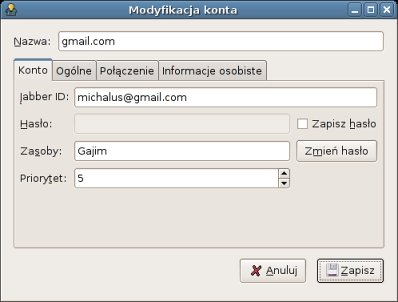
- Konfiguracja połaczenia w komunikatorze Gajim
- 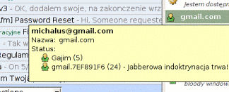
- Widok zasobów i priorytetów dla konta Google Mail z połączonym jednocześnie Gajimem i wbudowanym klientem na WWW
Widząc kontakt na liście kontaktów widzimy także jego wszystkie
połączenia do serwera używające tego konta. Najczęściej symbolizowane jest
to napisem w stylu nazwa_zasobu (priorytet). Jeżeli kontakt ma
aktualnie więcej połączonych zasobów przed rozpoczęciem rozmowy czy przed
wysłaniem wiadomości można wybrać, który zasób będzie adresatem akcji.
Jeżeli wysyłamy swoją wiadomość lub rozpoczynamy rozmowę bez określenia konkretnego zasobu adresat zostanie ustalony na podstawie priorytetu połączenia. Im wyższy priorytet, tzn. większa wartość, tym połączenie jest ważniejsze. Jeżeli więcej niż jedno połączenie ma najwyższą wartość priorytetu zostanie wybrane to, do którego użytkownik połączył się najpóźniej.
Jabber vs. XMPP
Co to jest Jabber, a co to jest XMPP? Czym różni się Jabber od XMPP? Czy powinno mówić się Jabber czy może XMPP? Wszystkie te wątpliwości opisał na blogu Peter Saint-Andre. Poniżej pozwolę sobie go zacytować i przetłumaczyć główną myśl.
The term "Jabber" is, unfortunately, ambiguous. In 1998, Jeremie Miller invented something he called Jabber, and he released it as an open-source project on January 4, 1999. Pretty soon there were many Jabber-related open-source projects, in March 2000 a company called Jabber.com was formed, etc. Over time we have striven to disambiguate the term, thus Jeremie's server was renamed "jabberd" instead of "the Jabber server", we came up with the term "XMPP" instead of "the Jabber protocol", we formed the Jabber Software Foundation to manage the protocols, etc. I think that if "Jabber" means anything as a standalone noun, it refers to the whole ecosystem of protocols, open-source projects, products, companies, server deployments (etc.) that use the underlying XML streams technology invented by Jeremie. However, I never use "Jabber" as a standalone noun, only as an adjective (...) thus "Jabber community", "Jabber technologies", etc. (but not "Jabber" on its own).
Ther term "XMPP" refers to the core XML streaming protocols contributed by the Jabber Software Foundation to the Internet Standards Process and subsequently published as RFCs 3920 and 3921.
Most XMPP extensions are defined in
documents still called (for historical reasons) "Jabber Enhancement
Proposals" or JEPs, but in my opinion it is inaccurate to say that "Jabber"
= XMPP + JEPs, since there really is no one thing called "Jabber".
-- Źródło,
blog Petera Saint-Andre
Termin "Jabber" posiada aktualnie wiele znaczeń. Początkowo nazwa projektu open-sourcowego stworzonego przez Jeremiego Millera przestała być jednoznaczna. Powstało wiele innych powiązanych z nim projektów wykorzystujących tą nazwę w tym nawet przedsiębiorstwo Jabber.com. Próby ustandaryzowania nazewnictwa przyniosły nazwanie serwera jako "jabberd" zamiast "serwer Jabbera" czy "XMPP" zamiast "protokół Jabber". Stworzona została Jabber Software Foundation, która ma za zadanie zarządzanie protokołem. Peter wspomina, że dla niego "Jabber" nie oznacza niczego co jest pojedynczym rzeczownikiem. Określenie odnosi się do całego ekosystemu protokołów, projektów, produktów, przedsiębiorstw, serwerów itd. - do wszystkiego tego gdzie u podstaw leży technologia wymyślona przez Jeremiego. Peter pisze, że nigdy nie używa słowa "Jabber" jako pojedynczego rzeczownika, a prędzej jako przymiotnika - takich jak przykładowo "społeczność Jabbera" - ale nie jako "Jabber" sam w sobie.
"XMPP" odnosi się natomiast do podstaw protokołu przedstawionego, przez Jabber Software Foundadtion, Internet Standards Process i opublikowanego jako RFC 3920 i 3921.
Większość rozszerzeń XMPP jest definiowana w dokumentach, które ciągle nazywają się, z przyczyn historycznych, "Jabber Enhancement Proposals" czyli tzw. JEPy. Jednak Peter wyjaśnia, że nie oznacza to tego samego co przyrównanie Jabbera do sumy XMPP oraz JEPów, ponieważ jedna rzecz określana jako "Jabber" nie istnieje.
Stany, widzialny, niewidzialny
Kilka słów na temat dostępnych do wyboru w większości klientów stanów. Ponieważ w wielu sieciach i klientach stanów jest znacznie mniej początkujący użytkownik może być w nich troszkę zagubiony. O co tu chodzi?
-
To jak wszędzie podstawowy stan. Oznacza on, że jesteśmy połączeni do
serwera i tym samym dostępni dla innych. Jeżeli go ustawisz to tak jak
byś chciał powiedzieć
patrzcie jestem połączony
. W wersji angielskiej najprawdopodobniej nazywać się on będzie po prostu online. -
Coraz bardziej popularny stan. Różnie nazywany, ja nazwałem go
rozgadany chociaż równie dobrze mógłby nazywać się zagadaj
mnie. Po angielsku określany jako ready for chat czy tak jak w
Skype skype me. Ustawiając taki status oznacza
zagadaj mnie, jestem chętny do rozmów
. To dla tych co mają ochotę z kimś ze swojej długiej listy kontaktów poplotkować, ale przecież nie będą zagadywać każdej osoby. - Status nieobecności, ustawiany jeżeli nie ma nas przy komputerze przez jakiś czas. Często ustawiany przez komunikator jeżeli nie ma nas przez określoną liczbę minut lub gdy włącza się wygaszacz ekranu. Jeżeli masz ustawiony taki stan, każdy inny powinien spodziewać się, że nie ma cię przy komputerze i nie odpowiesz na jego wiadomości. Jeżeli masz angielską wersje komunikatora na ekranie zobaczysz stan away
- Status rozszerzonej nieobecności, oznaczany
jako extended away lub po prostu ext. away. Wykorzystywany
często w komunikatorach jako drugi stopień automatycznej nieobecności.
Ustawiany przez nie po dłuższym czasie gdy nie ma nas przy klawiaturze.
Ustawiając taki stan przekazujemy innym informacje
nie ma mnie już dłuższy czas, wyszedłem gdzieś dalej, nie wrócę za kilka chwil
. - Wprowadzający najwięcej zamieszania wśród nowych użytkowników stan nie przeszkadzać. Jego nazwa często oznaczana jest angielskim akronimem DND oznaczającym właśnie nie przeszkadzać, tzn. Do not disturb. Ustawiamy taki stan gdy pracujemy czy robimy cokolwiek innego i nie chcemy aby ktoś zaczepiał nas z mało ważnymi informacjami.
- Przeciwnie do stanu dostępności ten ustawia się wtedy gdy nie jesteśmy połączeni. Po angielsku, stan niedostępności, najczęściej określany jako offline. Jeżeli widzisz taki stan oznacza to, że konkretna osoba nie jest podłączona do serwera.
Osobna historia dotyczy stanu niewidzialny. Chociaż zwykłego użytkownika może to zupełnie nie interesować, poniżej napiszę kilka słów o tym stanie. Jeżeli twój klient posiada ten stan spróbuj go ustawić, jeżeli coś do końca nie zadziała przeczytaj dokładnie to co poniżej.
- Stan niewidoczny oznaczany po angielsku najczęściej jako invisible ma za zadanie po połączeniu do serwera uczynić nas niewidzialnymi. Tzn. wszystkie osoby będą widziały nas jako osoby rozłączone, jednak my mamy możliwość wykonywać wszystkie działania tak jakbyśmy byli do niego podłączeni z normalnym stanem.
Stan niewidoczności wprowadził pewne zamieszanie. Początkowo nie został on przewidziany i został dodany dopiero jako kolejne rozszerzenie oznaczone numerem JEP 0018. Ze względu na problemy techniczne o których można przeczytać w linkach poniżej JEP 0018 został wycofany jako niezgodny z protokołem XMPP. Część klientów i serwerów oferuje jeszcze to rozszerzenie, jednak jest to czas przejściowy przed powszechnym wykorzystywaniem rozbudowanego mechanizmu privacy-lists i rozszerzenia JEP 0126. Mechanizm privacy-list jest zgodny z protokołem XMPP i oferować będzie zaawansowane metody filtrowania i ustalania zasad widoczności dla wszystkich użytkowników.
Jak ustawiać stany
Jeżeli znasz już wszystkie stany i wiesz, który z nich co oznacza chciałbym napisać kilka słów o ich ustawianiu. Oczywiście sprawa tego co i jak ustawisz jest jak najbardziej dowolna. Znaczenie ich to jedynie wskazówka ich wykorzystania i każdy wykorzysta to tak jak będzie mu to wygodne. Warto jednak przyjąć kilka zasad ich używania.
Pozbawione sensu zazwyczaj jest ustawianie sobie ciągle stanu niewidoczności. Komunikator jest po to aby się komunikować, a ukrywanie się przed innymi przez cały czas uniemożliwia innym nawiązanie z tobą rozmowy. Jeżeli masz bardzo długą listę kontaktów, na której jest część osób dla których chcesz pozostać rozłączony wykorzystaj mechanizm privacy-lists. Niektóre klienty już go oferują. Jeżeli go nie oferują, zawsze można spróbować rozwiązać to prosto na serwerze.
Jeżeli ktoś ustawia sobie stan nie przeszkadzaj to uszanujmy to i nie
przeszkadzajmy mu. To nie jest dobry czas na zagadywanie słowami cześć
co słychać?
. To, że ma on cię na liście nie oznacza, że nie ma prawa do
chwili prywatności.
To samo dotyczy innych stanów. Starajmy się stosować je zgodnie z przeznaczeniem to ułatwi nam to wszystkim życie. Chcesz z kimś porozmawiać o byle czym -- ustaw sam stan rozgadanego lub poszukaj innej osoby z tym stanem. Odchodzisz od komputera, ustaw odpowiedni stan nieobecności. Osoby, które nie ustawiają stanów i tkwią ciągle z tym samym z moich obserwacji irytują innych. Nie wiadomo nigdy czy można porozmawiać, czy mamy spodziewać się odpowiedzi, czy po prostu tego kogoś nie ma. Odpowiednie ustawianie stanu to dla mnie część podstawowej netykiety podczas używania Internetu.
Logowanie za pomocą komunikatora
Protokół XMPP/Jabber jest elastyczny i rozszerzalny. Jednym z zaprojektowanych rozszerzeń jest logowanie do dowolnego serwisu za pomocą komunikatora. Dla zainteresowanych technicznymi aspektami odsyłam do specyfikacji XEP-0070. Dla szukających ogólnego opisu zapraszam niżej.
- 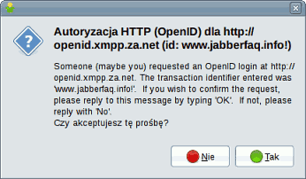
- Obsługa żądania potwierdzenia hasła w komunikatorze (Gajim) wspierającym XEP-0070
Aby móc logować się z poziomu komunikatora potrzebujemy aktywnego konta na które jesteśmy w danej chwili zalogowani i serwis wspierający logowanie z użyciem XEP-0070. My do testów wybierzemy publiczny serwer OpenID, który pozwala na zalogowanie się dowolnym kontem. Należy dostać się na wspomnianą wcześniej stronę, podać swój JID oraz identyfikator danej transakcji. Żądanie logowania zostanie wysłane wprost do naszego komunikatora. Jeżeli używamy najnowszej wersji popularnych komunikatorów typu Psi czy Gajim (posiadają one wsparcie dla tego rozszerzenia) otrzymamy przyjazne użytkownikowi okienko z podanym identyfikatorem transakcji i pytaniem czy chcemy daną transakcję autoryzować. Jeżeli komunikator nie wspiera rozszerzenia trafi do nas zwyczajna wiadomość tekstowa, którą będzie trzeba potwierdzić odpowiadając "OK".
Odpowiedź twierdząca na zadane przez serwis pytanie oznacza, że zostaniemy zalogowani do serwera OpenID. Jeżeli nie wiesz co to jest OpenID to zachęcam do zainteresowania się tematem. Jest to tak samo interesujące i przyszłościowe jak XMPP/Jabber. Zachęcam do przejrzenia artykułu na Wikipedii opisującego OpenID. Listę serwisów używających OpenID można zobaczyć na wiki Identity 2.0.
Inne użyteczne linki
Linki propagandowe
" (...) Yyyy... Każdy może prawda
krytykować, a mam wrażenie, że dopuszczanie do krytyki panie to nikomu...
Mmmm... Tak nie... Nie podoba się. Więc dlatego z punktu mając na uwadze,
że ewentualna krytyka może być, tak musimy zrobić żeby tej krytyki nie
było. Tylko aplauz i zaakceptowanie. Tych naszych prawda punktów, które
stworzymy. (...) "
-- Rejs
- Używaj bezpiecznej przeglądarki!
- Używaj alternatywnych systemów operacyjnych!
- Twórz strony zgodne ze standardami!
- Używaj Wolnego Oprogramowania!
- Bykom stop - Poprawna ortografia w Internecie
- Słuchaj wolnej muzyki!
- Wybieraj otwarte formaty plików!
michalus { jabster
(kropka) pl, gmail (kropka) com }. Drugi adres jest także adresem
poczty elektronicznej - jeżeli to możliwe preferuje kontakt za pomocą
poczty elektronicznej. Ten artykuł jest dostępny na licencji
Creative Commons by-nc-sa 2.0.